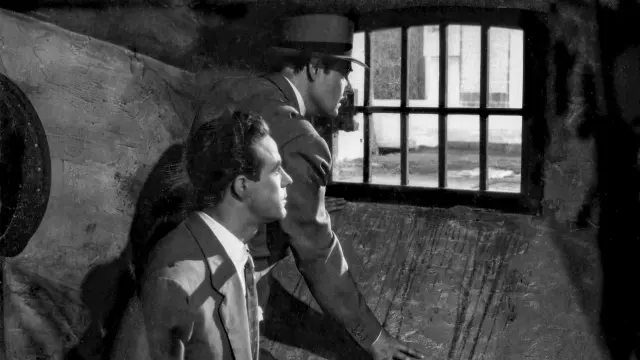
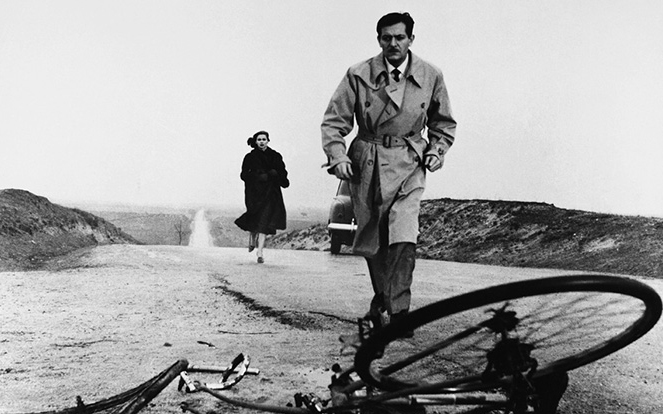
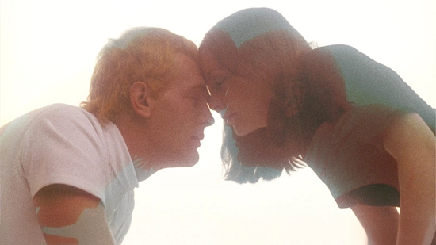
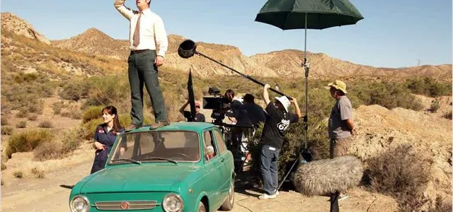
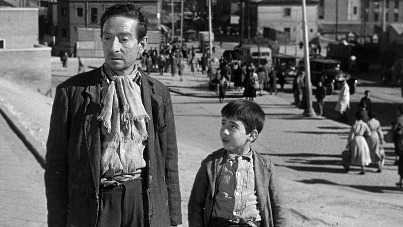

Drama
La casa del puerto
Una familia vuelve al pueblo donde creció y descubre que los recuerdos compartidos también esconden silencios y tensiones del pasado.
Ver conversaciónUn espacio para ver cine y conversar sobre películas
Este mes, el Club de Cine Varda dedicará sus encuentros al cine español. La selección reúne dramas, thrillers, romances y relatos de autor para conversar sobre memoria, ciudad, vínculos familiares y formas de contar historias en el cine contemporáneo.

Una familia vuelve al pueblo donde creció y descubre que los recuerdos compartidos también esconden silencios y tensiones del pasado.
Ver conversación
Durante una ola de calor en Madrid, una periodista investiga una desaparición que revela secretos políticos y personales.
Ver conversación
Dos antiguos amantes se encuentran nuevamente y enfrentan lo que nunca dijeron cuando su relación terminó.
Ver conversación
Un maquinista jubilado realiza un último viaje en tren mientras recuerda cómo cambió el país y su propia vida.
Ver conversación
Vecinos de un mismo edificio descubren que sus vidas están conectadas por pequeñas historias cotidianas.
Ver conversación
Una profesora intenta sostener a su familia y a sus estudiantes mientras la ciudad atraviesa una crisis profunda.
Ver conversación